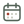

Offday is a Canadian work-calendar reference with regional and federal employment and public-service dates for all provinces and territories. JavaScript is required to display the date lists.
On the horizon